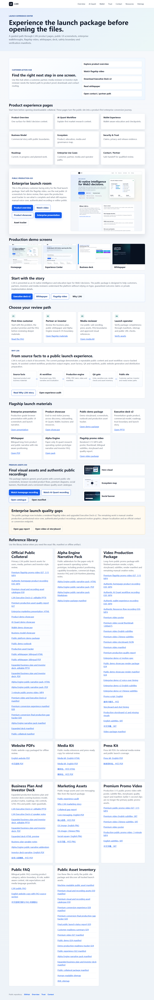

See the product
The homepage and product pages show the platform before the visitor opens a deck.
Product overviewL3AI public story
L3AI turns Web3 signals, AI-assisted explanation, wallet-aware education, membership and automation into one guided participation path.
Narrative principle
Web3 users often meet signals, wallet context, product language and community momentum before they know how to participate. L3AI slows that moment down: explain the context, show the path, connect the platform modules and help the visitor choose a useful next step.
The homepage and product pages show the platform before the visitor opens a deck.
Product overviewAI Quant is explain-first. It supports review context without outcome promises.
AI Quant workflowWallet-aware education and trust pages keep the public journey safe, clear and reviewable.
Security and trustResources hold the customer story, product book, partnership deck, video package and official public materials.
Brand system resourcesUse these as the primary customer-facing materials. Older decks remain available as archive or supporting materials.
For first-time visitors who need the clearest customer-ready story of why L3AI exists, what changes and how to participate.
PDF PPTX HTML previewFor prospective users who want the current product surfaces, lifecycle, capability map and safety rules.
PDF PPTX HTML previewFor partners and investor-style reviewers who need the commercial loop, roadmap gates and review path.
PDF PPTX HTML previewCurrent / In Progress / Planned
Current public pages, recordings and downloadable assets are separated from in-progress creative polish and planned growth automation. This keeps the public narrative credible and avoids unsupported future-feature claims.

The story system does not contain private source references, credentials, protected implementation details, real account data, wallet signing material, unsupported performance claims, yield-rate claims, asset-price claims, unverified traction claims or unapproved partnership claims.